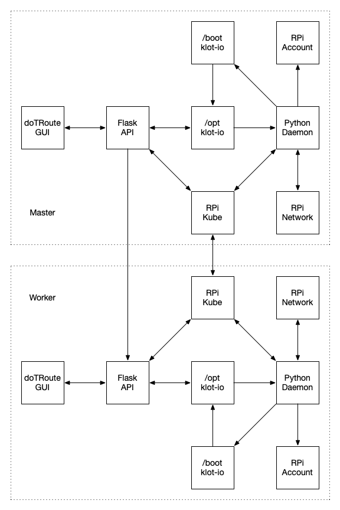

{{#def.Header}}
<div class="uk-overflow-container">

    <h1>Magnets are Miracles</h1>

    <h2>Design</h2>

    <h3>Components</h3>

    <p>The klot.io system (jeez, I sound like an infomerical) is composed of several pieces:</p>

    <ul>
        <li>
            Processes - what does the work
            <ul>
                <li>Python Daemon - implements configuration</li>
                <li>Flask API - indicates status and accepts changes</li>
                <li>doTRoute GUI - easy to use interface for regular folks</li>
                <li>Python DNS - mimcks mDNS for devices that don't supprt it</li>
            </ul>
        </li>
        <li>
            Services - what to configure
            <ul>
                <li>RPi Account - pi account password and SSH access</li>
                <li>RPi Network - Whether wired or wireless and how you to connect to the latter</li>
                <li>RPi Kubenetes - Whether Master or Worker, how to connect the latter to the former</li>
            </ul>
        </li>
        <li>
            Storage - where configuration is retained
            <ul>
                <li>/opt/klot-io - current state, what everything show be</li>
                <li>/boot/klot-io - initial state, able to be set by mounting the SD card</li>
            </ul>
        </li>
    </ul>

    <h3>Layout</h3>

    

{{#def.Footer}}
